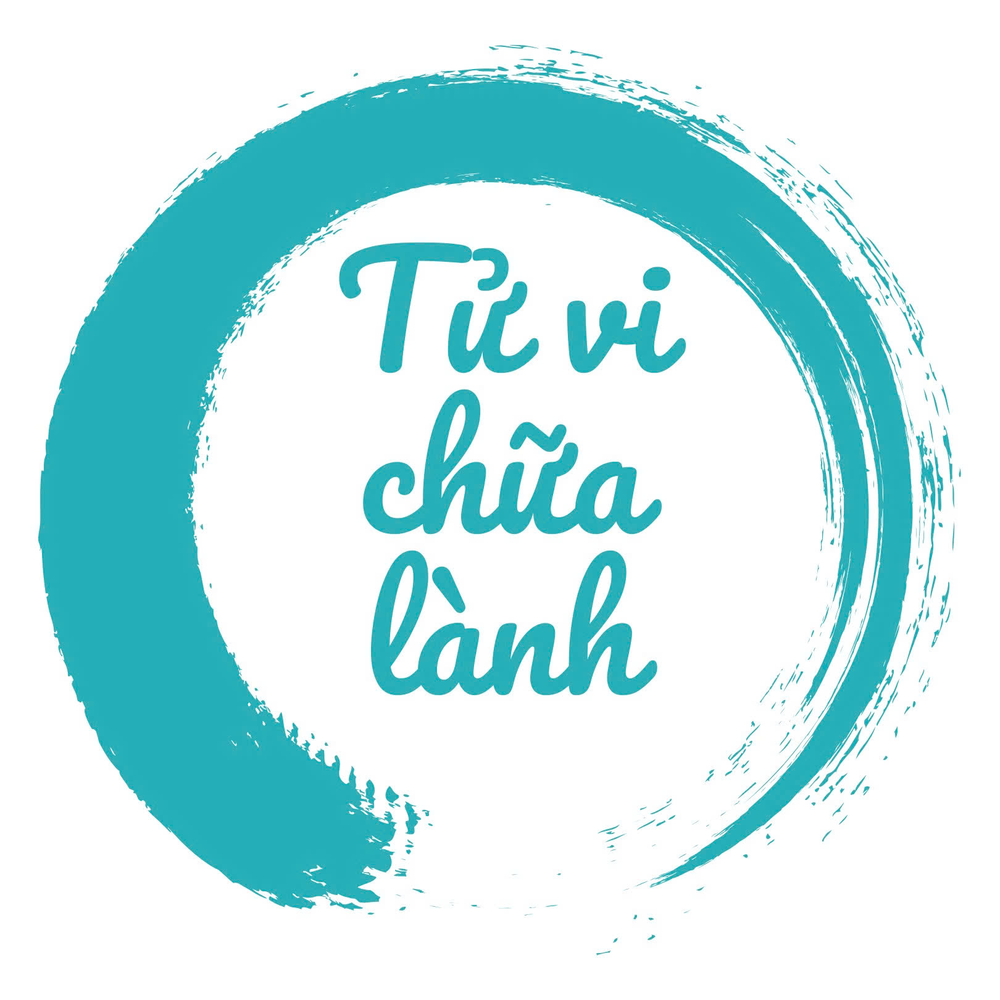
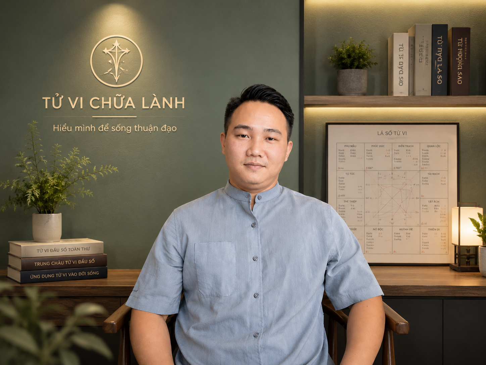

01
ĐỊNH NGHĨA CUNG PHÚC ĐỨC
Cung Phúc Đức thực sự phản ánh điều gì? Vì sao đây là cung quan trọng để hiểu "nền" của một đời người?

Hiểu gốc rễ – Thấy mô thức – Chuyển hóa chính mình
Trong Tử Vi Chữa Lành, Cung Phúc Đức không chỉ nói về "phúc của tổ tiên". Đó là vùng nhìn vào nền phúc, dòng họ, sức nâng đỡ vô hình, đời sống tinh thần và khả năng an trú của một người.
Một khóa học nhập môn để bạn bắt đầu nhìn Cung Phúc Đức không bằng sự sợ hãi, mà bằng sự hiểu mình.
ĐĂNG KÝ NGAY · 99.000đ
Vì sao trong Tử Vi, có những lá số thường được luận giải là có nhiều trợ lực khi gặp khó?
Vì sao cùng là điều kiện thuận lợi, khả năng cảm nhận sự đủ đầy ở mỗi lá số lại khác nhau?
Và những mô thức, niềm tin thường được tìm hiểu từ những yếu tố nào?
Thay vì nhìn Phúc Đức như một câu trả lời "có phúc hay không", chúng ta học cách nhìn nó như một vùng bản đồ để quán chiếu chính mình.
Cung Phúc Đức thực sự phản ánh điều gì? Vì sao đây là cung quan trọng để hiểu "nền" của một đời người?
Mệnh là khí chất và khuynh hướng gốc. Phúc là nền nâng đỡ bên trong. Khi hai cung này tương tác, chúng kể câu chuyện gì về cách một người sống và trải nghiệm cuộc đời?
Vì sao có người khi gặp thử thách thường có "đường lui"? Cung Phúc Đức cho thấy những dạng phúc khí, sự trợ lực và khả năng vượt qua nghịch cảnh như thế nào?
"Có phúc" không chỉ là có được nhiều. Mà còn là có khả năng cảm nhận, đón nhận và sống được với những gì mình đang có.
Điều gì ảnh hưởng đến sự an trú của tâm? Vì sao khả năng vững vàng trong cùng hoàn cảnh lại khác nhau ở mỗi người?
Tâm là chìa khóa để nhìn lại và chuyển hóa.

Thầy Nhật Mạnh có hơn 3 năm giảng dạy và nghiên cứu Tử Vi Chữa Lành toàn thời gian. Thầy đã đồng hành cùng hơn 100 khóa học và xem qua hơn 1.000 lá số.
Hiện thầy là giảng viên của Bộ tộc Tử Vi Chữa Lành, chia sẻ kiến thức theo hướng dễ hiểu và ứng dụng.
Cảm nhận từ các lớp học trong hệ thống Tử Vi Chữa Lành, ưu tiên những chia sẻ nhắc trực tiếp đến thầy Nhật Mạnh. Bấm vào ảnh để đọc rõ hơn.
"Chỉ qua vài buổi học, mình đã nhìn thấy rõ hơn về điểm mạnh, điểm yếu, chu kỳ cảm xúc và cả những bài học cuộc đời mình đang đi qua. Cảm giác giống như soi lại chính mình."
"Giọng thầy rất ấm và trầm nhưng không hề gây buồn ngủ, cách truyền đạt khá dễ hiểu. Học xong khóa, em cảm thấy như đã hiểu được mình."
"Tử Vi không đoán số – mà mở số. Không nói điều sẽ xảy ra, mà giúp mình chủ động chọn cách sống khác đi."


Được. Khóa học không dạy xem bói, mà dạy cách đọc và quán chiếu qua lá số của chính mình — không cần nền tảng gì trước đó.
Khóa này tập trung vào việc bạn hiểu và chuyển hóa chính mình, không phải khóa hành nghề. Ai muốn đi sâu hơn sẽ có lộ trình riêng ở các khóa tiếp theo.
Bạn vẫn giữ chỗ như bình thường, sẽ có link ghi hình gửi lại trong nhóm Zalo sau mỗi buổi.
Điền thông tin bên dưới, sau đó bấm đăng ký để qua bước thanh toán và giữ chỗ.
Cần hỏi thêm trước khi đăng ký? Nhắn Zalo Bộ Tộc: 0966 948 401*Học phí ưu đãi Vu Lan áp dụng cho 50 suất đầu tiên